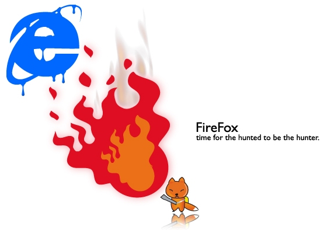
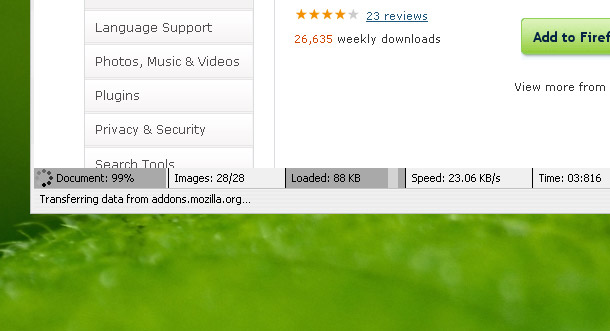

إضافات الفايرفوكس ٢

جزء ثاني من سلسلة إضافات الفايرفوكس .. 12 إضافة من تلك الإضافات اللتي تحرق الإكسبلورر :)
1

ضافة للتحميل ، تعطيك خصائص كثيرة من خصائص برامج التحميل مثل تحميل روابط معينة من الصفحة أو تسلسل في التحميل ..
2

إضافة جميلة تتيح إضافة الصفحات المؤقتة إلى قائمة لقرأتها مستقبلاً.
3
إضافة لتحميل ملفات الفيديو بصيغة flv مثل اليوتيوب وغيره.
4

إضافة الترجمة من موقع قوقل .. كل ما عليك تحديد الكلمة ثم رايت كلك وترجمة.
5

هناك مواقع نزورها يوميا او ربما في إحدى أيام الأسبوع ، هذا الاضافة تتيح لك إختيار مجموعة من الروابط وتصنيفها على أيام أول كل الأيام .. وبمجرد الضغط على أيقونات الإضافة يتم فتح صفحات ذلك اليوم.
6

إضافة تتيح إستعراض الصور أو ملفات الفيديو بطريقة جميلة

7
في أثناء بحثنا في قوقل قد تصادفنا نتائج من اليوتيوب .. هذه الإضافة تقوم بإستعراضها مباشرة.
8

لنقل أو نسخ التاب إلى صفحة جديد.
9

لإظهار معلومات أسفل الصفحة .. عدد الصور،الوقت المستغرق لفتح الصفحة وغيرها..

10

تبحث عن الجديد في القوقل ريدر.
11

قد تكون لديك صفحات لم تنتهي منها وتريد إستكمالها عن الدخول مرة أخرى على الفايرفوكس .. هذه الإضافة تتيح لك الخروج مع حفظ الصفحات المفتوحة.
12

قد تكون مجرد إضافة شكلية تعطي شريط يبين مدى إكتمال الصفحة ، لكنها جميلة :)